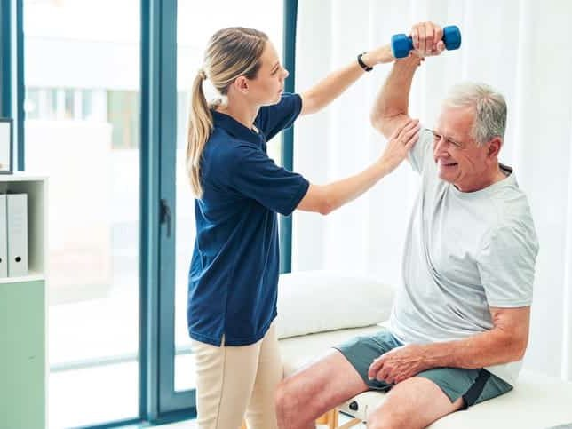
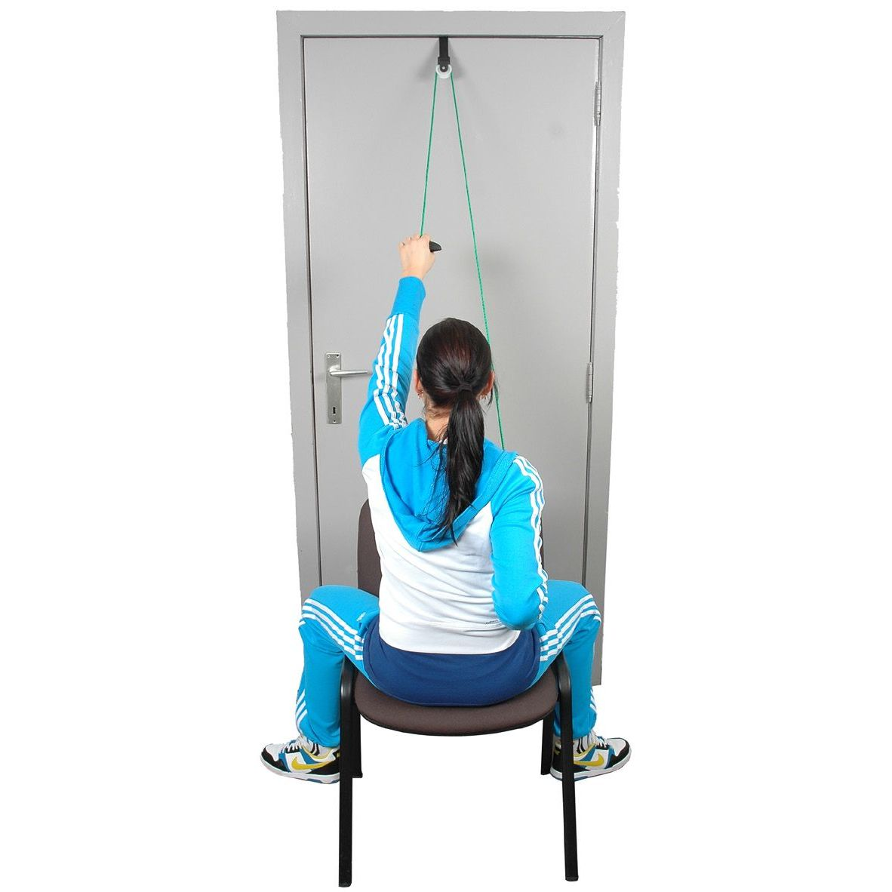

Physiotherapy and rehabilitation information from Al Kareem Physiotherapy and Rehabilitation Centre, Lodhran.
Featured article
Geriatric Care
Physiotherapy for Older Adults: Staying Mobile, Steady and Independent
Geriatric Care · 9 Feb 2026

Photo for illustration
As we grow older, joints stiffen, muscles weaken and everyday movements — climbing stairs, getting up from a chair, walking to the shops — slowly become harder. Regular physiotherapy in old age is not about treating one injury; it is about keeping the whole body moving well for as long as possible.
A physiotherapist first looks at how you walk, balance and move, then builds a gentle programme around it: stretching and strengthening for painful joints and muscles, balance training to steady your step, and walking practice to keep your stride confident. Over time this eases joint and muscle pain, protects mobility, and improves walking, balance and strength.
The benefit that matters most is safety at home. Stronger legs and better balance lower the risk of falls — the most common cause of serious injury in older adults. And as movement improves, daily tasks become easier again: dressing, cooking, bathing, getting out on your own.
Ageing is not a reason to stop moving. With the right guidance, regular physiotherapy helps older adults stay active, steady and independent in their own homes.
Bell’s Palsy (Laqwa): When One Side of the Face Suddenly Weakens
Neurological Rehab · 30 Oct 2025
Photo for illustration
Bell’s palsy, known locally as laqwa, can arrive without warning. A swollen or compressed facial nerve suddenly weakens the muscles on one side of the face: the mouth pulls to one side, the eye will not close fully, and speaking and eating become difficult. It is frightening — but with the right care, most people recover.
Physiotherapy plays a central role in that recovery. Treatment usually begins with electrical stimulation to wake up the weakened facial muscles, combined with gentle facial massage to improve blood flow and keep the muscles supple. Guided facial exercises then retrain the muscles to move again — raising the eyebrow, closing the eye, smiling — practised little and often.
Taping can support the weak side of the face and help protect the eye, while mirror therapy lets the patient watch their own face as they practise, so the brain relearns the correct movement patterns.
The key is to start early and practise regularly. Bell’s palsy affects the face, but its effects reach much further — confidence, eating, speaking and daily life. Physiotherapy works on all of it, one small movement at a time, until the face moves freely again.
After a stroke, the simplest actions can feel impossible: switching on a light, turning a key, pulling up a zip. The hand that once did these things without thinking now struggles with grip, coordination and fine control — and with them, independence slips away.
Stroke rehabilitation rebuilds those skills by practising the actions themselves. At the clinic, patients work on a functional activity board — a board fitted with everyday fittings such as switches, locks and zippers — repeating the exact movements of daily life until the hand relearns them.
Each repetition matters. Turning a switch trains the pinch grip; working a lock builds wrist control; pulling a zip practises coordinated finger movement. Slowly, grip strengthens, coordination returns and fine hand control improves.
The goal is never the board itself — it is what the board makes possible: dressing without help, opening a door, making a cup of tea. Relearning hand skills is relearning independence, one everyday action at a time. If you or a family member is recovering from a stroke, ask at the clinic about a rehabilitation plan.
Frozen Shoulder: When the Shoulder Slowly Locks Up
Musculoskeletal Rehab · 23 Oct 2025

Photo for illustration
A frozen shoulder does not happen overnight. It creeps in: reaching for a shelf becomes harder, then fastening a seatbelt, then lifting an arm to comb your hair. Week by week the shoulder stiffens until movement is locked and even simple tasks hurt.
The condition — a stiffening and tightening of the tissues around the shoulder joint — progresses in stages, from pain to stiffness to a slow thaw. Left alone it can take months or years to ease. Targeted physiotherapy speeds that process up.
Treatment combines hands-on manual therapy, which gently loosens the tight tissues around the joint, with guided exercises the patient does every day. Wall-ladder exercises — walking the fingers up a ladder fixed to the wall — gradually restore overhead reach, while a shoulder wheel builds smooth, controlled rotation.
Done regularly, this combination restores mobility and reach: the arm lifts higher, the shoulder turns more freely, and daily tasks stop hurting. The earlier treatment starts, the faster the shoulder thaws. If your shoulder is stiffening and your reach is shrinking, book an assessment at the clinic.